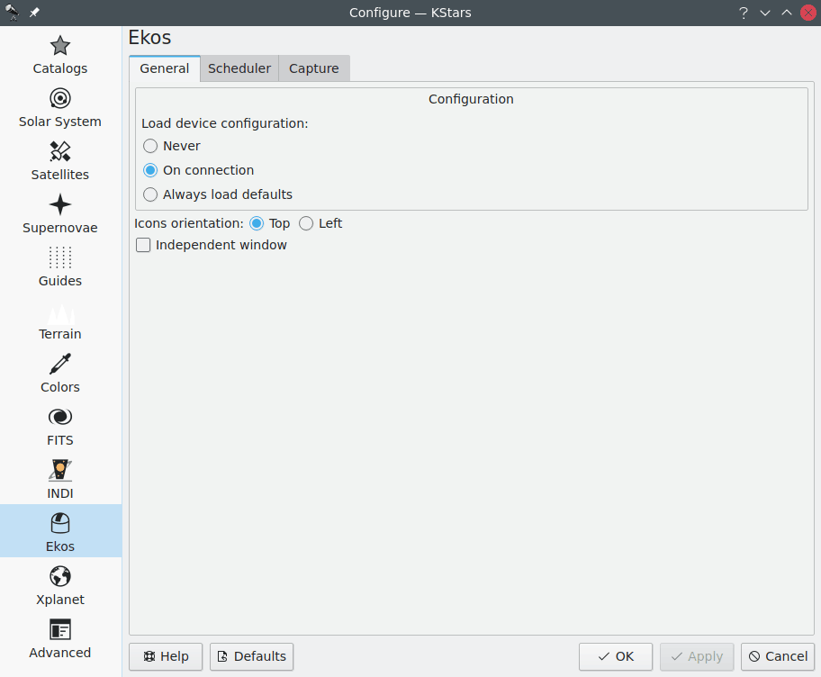

Ekos est une suite d'astrophotographie complète qui permet de contrôler tout périphérique INDI tels que des montures, des CCD, des APN, des moteurs de mise au point, des roues à filtres et bien plus encore. Ekos gère le suivi de haute précision en utilisant des résolveurs en ligne et hors ligne, la mise au point automatique et l'autoguidage ainsi que l'acquisition d'images unique ou multiple en utilisant le puissant gestionnaire de séquences. Pour des explications détaillées d'Ekos, veuillez lire la section Ekos de ce manuel.